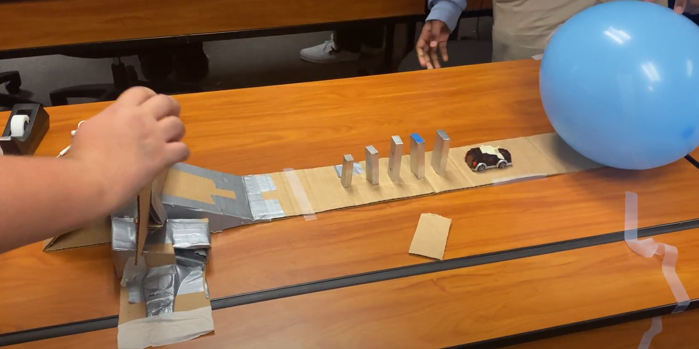
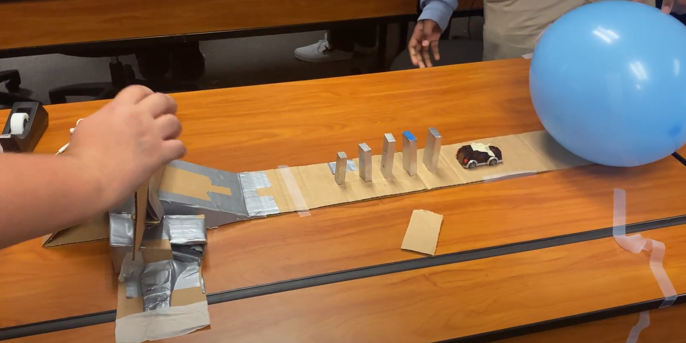
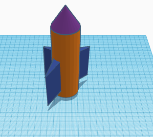
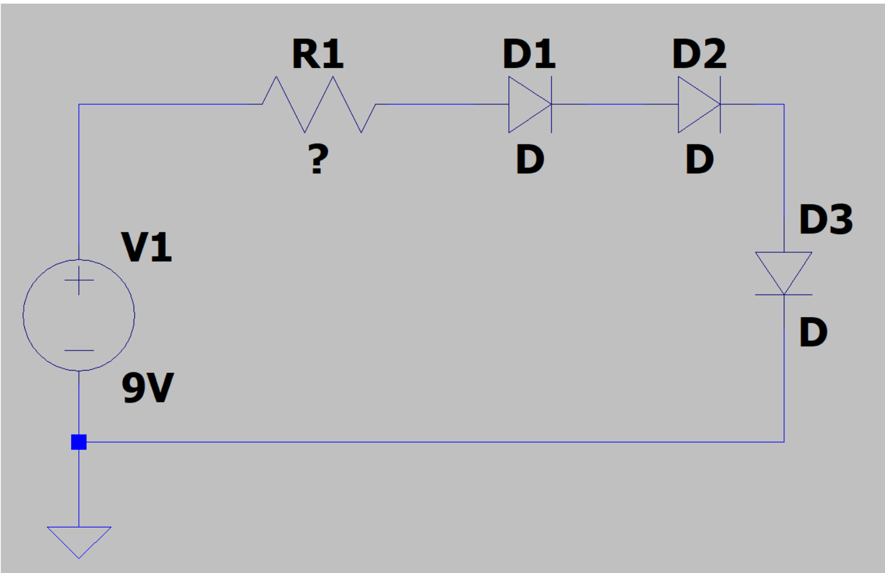
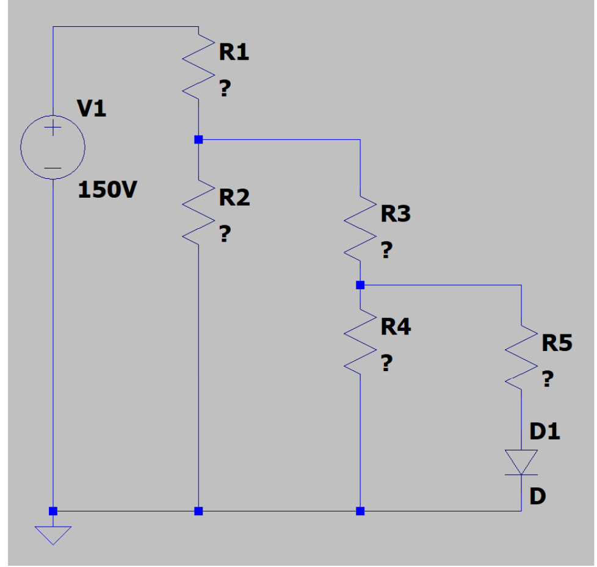
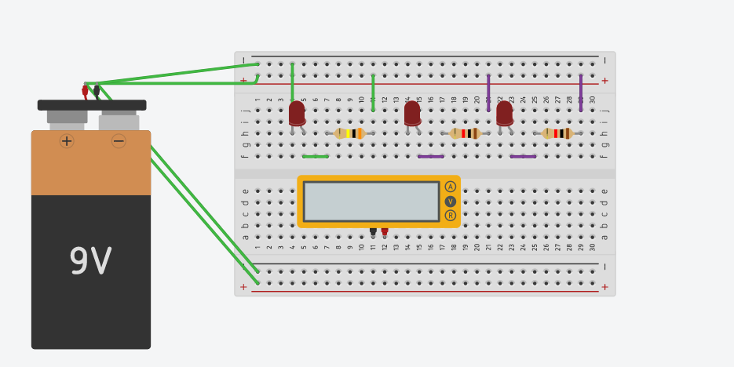
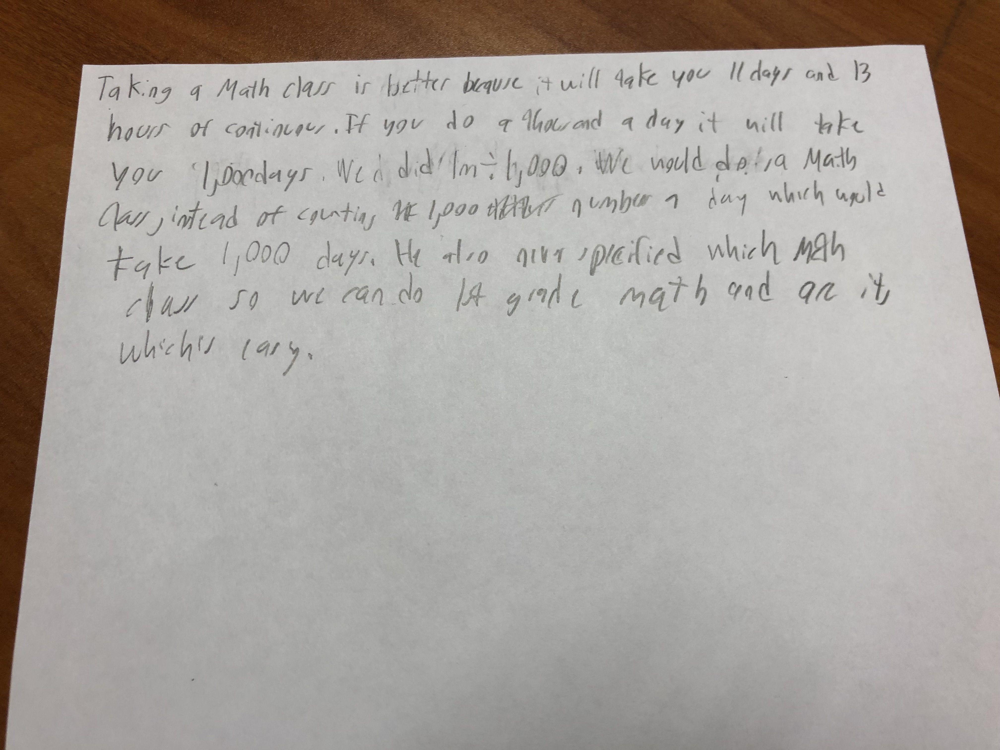
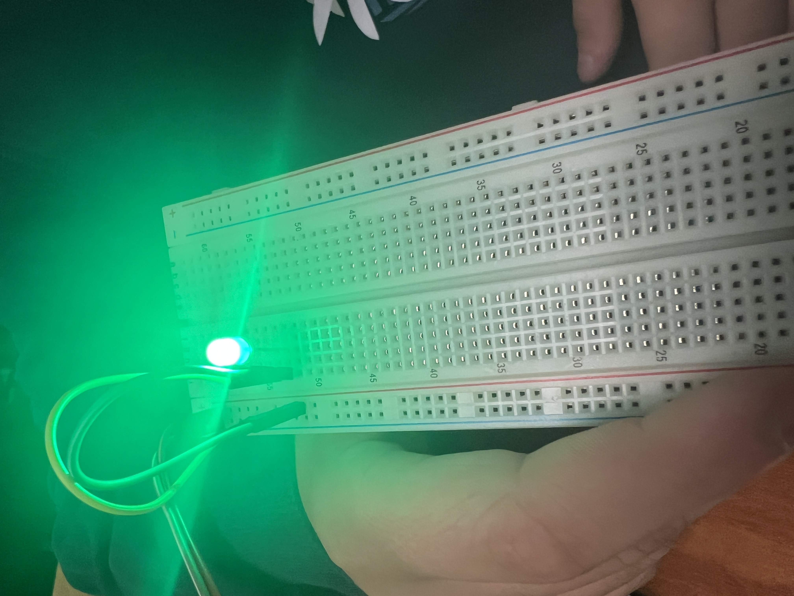

8/19/2022 Today I made a website wow im so happy
9/2/2022
This week we learned about mechanical engineering + we had to designed something on tinkercat, We have a project to do next week.
9/16/2022 we did a lot,we disigned a goldberd machine and our challenge day we did our boat challenge day and we did a lot of updating the website. We also did the ruth goldberd machine and we cut it.
9/23/2022 This week we did our golberd machine and we did it, I don't remember challenge day but i'm guessing my group skipped it because we were beind on the golberd machine, we finished it and it all went well, we finished it.
9/30/2022 Mr.Poole got covid and he couldn't come to class for the whole week. We started to design a Prosthetic for any kind of animal and I designed a prosthetic for a elephant leg, because a lot of elephants loose legs and they are funny/big creatures. The class wanted to do a challenge day but Mr.Poole was absent so instead we just worked on our prosthetics in the time being.


 

10/7/2022 Mr.Poole came back from covid and he got mad at me because I didn't do my work, that day i went home and did all the work, lol. Basically this week we learned about Computer Engineering and we had to take apart a laptop, fill in some worksheet and after we fill in that worksheet we turn it in and we try to put the laptops back on, but no one did. For challenge day we had to see if there was more wheels or doors in the campus and my side of the classroom got wheels, I'm sure there were more wheels then doors in the campus tho. Me and my partner went out and we caculated it, We were not close, very far but in all, we did very well.

10/14/2022 This week was a good week, We looked about aerospace engineering slides and we learned it. After that Mr.Poole announced that we had to make a bottle rocket next week and try to get it over the field goal or close to the field goal. For challenge day Mr.Poole gave us a paper and he made us get as close to or into a barrel, and most people made a paper airplane (including my group) but there were some people that made a ball, which was actually the best thing you could do in that situation. Ours was almost deadlast but it was a experience of a lifetime. WE also started to design our tinkercad for the rocket.
10/21/2022 This week we designed our bottle rockets, last week we designed a tinkercad for our rocket, or we started it. My group said we'll use coke and mentos. Our group started making our project and it went out good, but someone pointed out that you can use a lighter cardboard for your fins and that we should add paper around it to support it because we had a little hole from the glue gun because it was so hot it melted our 2L coke bottle. We did it and our group did horrible, First time our group used coke and mentos it went bad becuase someone already shaked it and the carbonation was gone from it. Then after that we added water to it and it worked pretty well, but I was suprised because I thought a lot of people's project would go flying but no ones did, most of ours just hit the floor or went in a loop. But I guess that is common for a high school engineering class. 10/28/2022 This week we looked at Enviormental engineering slides and we learned a lot, After tht Mr.Pool challenged us to make a water purifier and my group nd me did very good in the project, or water was almost clear. I also drank it because of how clear it was.
11/4/2022 This week we learned Electrical Engineering, Mr.Poole gave us slides and we all listened carefully, I was really into Electrical Engineering because my dad is a Electrician and I want to learn more, because of curiosity so basically I've listen to his slides and then Mr.Poole announced we had a Quiz and we did the Quiz, and im sure i got like a 70-80% on the Quiz but I have no idea. After that Mr.Poole made us do a worksheet and told us that we're going to be doing the same thing but not on Tinkercad but in real life. I was so excited to hear this I almost jumped out of my seat.   
11/10/2022 This week we started doing the Arduino board, For the first day I didn't know what I was doing but Mr.Poole helped me out, We created some circuits and I experimented a little, thank god I didn't short the bulb. The second day we did the same thing but with a multimeter, and me and my parenter did really good, I had a lot of fun doing it too and I was interestee in this beause my dad is a Electrician. Mr.Poole also helped us a lot which im thankful of. For the challenge day, We got a paper and had to decide if you would take a Math Class or if you would count to 1 Million, and my group choose Math Class rather then countng to 1 million. This week I had fun, like I always do.

